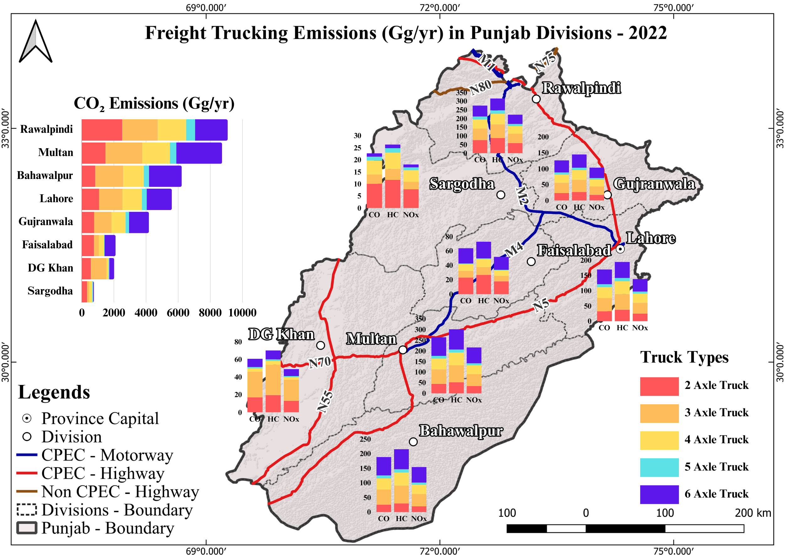

Data Visualization for PhD Research
Tsinghua University, China - Freight Emissions Analysis

Heatmap of Freight Emissions
This visualization represents freight emissions data across Balochistan, created exclusively from CSV data sources.
View Map

Bar-Chart Map of Emissions
Visual representation of freight truck emissions across divisions in Punjab using bar-chart mapping techniques.
View Map